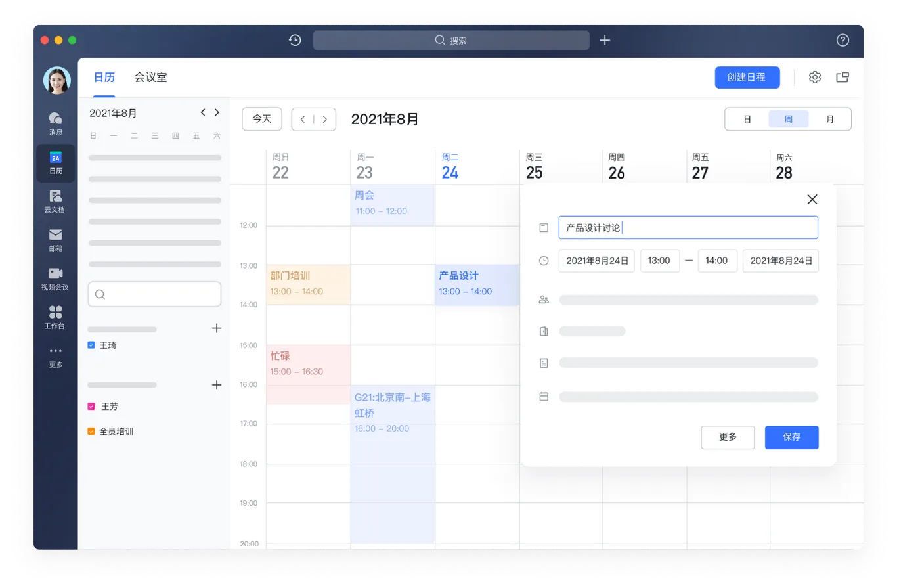

把飞书桌面端 8 个一级页面逐个拆开看：布局怎么分栏、组件怎么摆、每个界面背后要几个后端接口。最后得出我们这套 Redis + MySQL 的 IM 还差哪些 API 才撑得起同样一个界面。
飞书桌面端左侧是一根 68px 的深色图标栏，把产品切成 8 个互不干扰的空间。要点是：只有「消息」是实时流，其余都是结构化数据页。我们的项目只做了第 1 个。
三栏：图标栏 68 / 会话列表 300 / 聊天区自适应 + 右侧 40px 工具条。会话列表顶部有「全部 · @我 1 · 未读 4 · 云文档 · 更多」五个筛选 tab。

左侧迷你月历 + 日历分组（我的日历/订阅），主区是周视图时间轴，右侧浮层是「新建日程」。日程块按日历着色，支持「忙碌/空闲」。
块编辑器 + 顶部协作者头像堆叠 + 分享/权限下拉 + 右侧评论栏（评论 22 条）。行内有 @人 的彩色标签，正文段落有实时协作光标。
左栏是「个人置顶 + 页面树」（可展开的层级目录），右栏是文档正文。本质是文档的树形索引 + 权限继承。
左侧视图导航（表格/看板/日历/甘特），主区是可筛选排序的数据表，右侧是仪表盘（饼图、折线、漏斗）。一张表撑起一个业务系统。
顶部一级 tab（工作台 · 审批）+ 二级 tab（发起申请 · 审批中心 · 效率诊断）。主体是应用卡片宫格，不是聊天界面。
四宫格视频 + 底部麦克风/摄像头/挂断。旁边叠的是「智能纪要」：AI 总结 + 带时间戳的待办。会议结束产出物回流到文档。
组织架构树（可下钻的汇报线）+ 员工档案卡：工作信息 / 汇报线 / 团队统计 / 个人信息 / 履历 / 绩效 六个 tab。档案卡直接带「发消息」「OKR」按钮。
「消息」是唯一值得我们对标的页面，其余 7 个属于另一个产品域。这一页拆到底。
+ 新建#E1EAFF，hover #F2F3F5#F2F3F5、圆角 6px、左上角贴头像；自己：浅蓝 #D6E4FF、右对齐。气泡内可嵌 引用块（左侧竖线 + 被引内容 + 引用人）+ 更多 / 全屏 / 发送。输入框有 1px 蓝框聚焦把飞书界面里可复用的值抽出来，直接对齐我们的 app.css。左边是飞书，右边是我们的现状。
结论：我们的令牌表已经 1:1 对上，颜色不是差距。
飞书不用大圆角、不用彩色渐变，靠留白和 1px 细线分层。我们的 8px 圆角略大，气泡 6px 更贴近。
| 习惯 | 飞书做法 | 对我们的含义 |
|---|---|---|
| 已读只对发送者 | 群消息不显示「谁读了」，只在自己的消息下显示「已读 N」；点开才拉名单 | 我们已这么做，但名单接口不分页，500 人群会一次返回全员 |
| 未读分级 | 左侧图标栏显示总会话未读（49），会话列表 tab 分「未读 4 / @我 1」 | 缺一个聚合接口，现在只能前端遍历所有会话求和 |
| 进入即已读 | 打开会话立刻推进水位线，红点消失，不等服务端回推 | 我们已改成乐观清零，方向一致 |
现有 9 个接口（conversations / users / members / messages / receipt / seed / seed_big / healthz / ws）只够跑通「发消息 + 已读」。下面 19 个是对齐飞书界面必须补的。
| 接口 | 用途 | 为什么是 P0 |
|---|---|---|
POST /api/auth/login | uid → token，后续请求带 Authorization | 现在 ?uid=3001 明文传，任何人改数字就能冒充 |
POST /api/conversations | 建单聊/群聊，指定成员 | 现在只能靠 /api/seed 造数据，用户无法自己建会话 |
GET /api/messages?after_seq= | 增量补拉（断线重连、多端同步） | 现在只有 before_seq 往前翻，重连后拿不到中间漏的消息 |
POST /api/conversations/{id}/members | 加人 / 踢人 / 退群 / 转让群主 | 群成员固定，无法运营一个真实的群 |
| 接口 | 用途 | 对应飞书界面元素 |
|---|---|---|
GET /api/unread/summary?uid= | 返回总未读 / 会话数 / @我数 / 单聊未读 / 群未读 | 图标栏红点「49」+ 会话列表 tab「未读 4 · @我 1」 |
GET /api/search?q=&scope= | 跨消息/联系人/会话搜索，带高亮片段 | 标题栏居中那个大搜索框 |
GET /api/mentions?uid= | @我的消息列表（消息需带 at_uids） | 「@我 1」tab |
POST /api/conversations/{id}/settings | 置顶 / 免打扰 / 标记未读 | 会话右键菜单、置顶分组 |
POST /api/messages/{id}/recall | 2 分钟内撤回，广播 recall 事件 | 消息 hover 出的「…」菜单 |
POST /api/messages/{id}/reaction | 表情回应，返回聚合计数 | 气泡下方的表情条 |
POST /api/upload | 图片/文件上传，返回 url + 缩略图 | 输入框右侧 + / 剪贴板图标 |
GET /api/user/{uid} | 用户详情：部门、职位、邮箱、手机 | 点头像弹出的名片 |
GET /api/org/tree | 组织架构树 + 部门成员 | 通讯录页、群成员按部门分组 |
WS send: reply_to | 消息带引用 msg_id，服务端回填被引摘要 | 气泡里的引用块（图里「王芳：我之前用过…」） |
| 接口 | 用途 | 备注 |
|---|---|---|
WS typing / presence | 「正在输入」、在线状态 | 高频小包，走独立 channel 不落库 |
GET /api/receipt?offset=&limit= | 回执名单分页 | 500 人群必须分页，现在一次全返回 |
GET /api/read/state?uid= | 多端已读位置同步 | 水位线已有，缺一个批量读接口 |
POST /api/messages/forward | 转发 / 合并转发 | 需要跨会话写消息 + 权限校验 |
POST /api/messages/{id}/pin | 收藏 / 会话内置顶 | 右侧工具条「置顶」入口 |
GET /api/notifications | 系统通知中心 | 与业务消息分流，避免污染会话列表 |
按「补一个接口，界面上立刻能看见一块」的顺序排，避免做了一堆接口前端用不上。